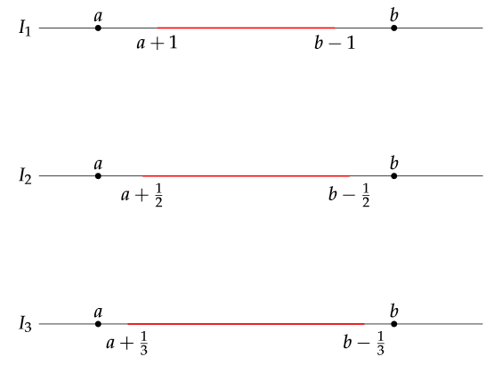

Chapter 1 - Set Theory
1.1 Sets and Functions
Problem 1
If $A\cup B = A$ and $A\cap B = A$, then $A = B$.
Proof.
In order to prove that two sets are equal,
we show that $A\subset B$ and $A\supset B$.
$\subset$). Since $A = A\cap B$ and $A\cap B\subset B$ , then $A \subset B$.
$\supset$). Since $B \subset A\cup B$ and $A\cup B = A$, then $B\subset A$.
By inclusion both ways, $A = B$.■
Problem 2
Show that in general $(A-B)\cup B \not= A$.
This can be shown by finding a counterexample. A simple case is when the sets
are disjoint. If we set $A = \{a\}$ and $B = \{b\}$ where $a\not= b$, then
$$
A - B = \{a\} - \{b\} = \{a\} = A.
$$
And then:
$$
(A-B)\cup B = A\cup B = \{a\}\cup\{b\} = \{a,b\} \not= \{a\} = A.
$$
Problem 3
Let $A = \{2, 4, \ldots, 2n, \ldots\}$ and
$B = \{3, 6, \ldots, 3n, \ldots\}$. Find $A\cap B$ and $A-B$.
$A$ is the set of all numbers divisible by 2 (even numbers), and $B$ is the set of all numbers
divisible by 3.
The set $A\cap B$ contains the numbers that are divisible by both 2 and 3. The first
elements will be $\{6, 12, 18, \ldots\}$ so it is clear that it will contain all
numbers divisible by 6.
$$
A\cap B = \{6, 12, 18, \ldots, 6n, \ldots\}.
$$
The set $A-B$ will contain all even numbers, except those that are divisible by
3. The terms become $\{2, 4, 8, 10, \ldots\}$. We can express this generally
by defining:
$$
g(n) =
\left\{
\begin{matrix}
1, & \text{$n$ is odd} \\
2, & \text{$n$ is even}
\end{matrix}
\right.
$$
And so we get:
$$
A - B = \{2, 4, 8, 10, \ldots, 3n - g(n),\ldots \}
$$
Problem 4
Prove that:
(a) $(A-B)\cap C = (A\cap C)-(B\cap C)$
Proof.
Assuming that $x\in (A-B)\cap C$ for some arbitrary $x$. We get the following
equivalent statements.
$$
\begin{aligned}
x\in (A-B)\cap C &\Leftrightarrow x\in A\cap B^c\cap C \\
&\Leftrightarrow x\in A\cap B^c\cap C \cap C \\
&\Leftrightarrow x\in A\cap C\cap B^c \cap C \\
&\Leftrightarrow x\in A\cap C\;\text{and}\; x\in B^c \cap C \\
&\Leftrightarrow x\in A\cap C\;\text{and}\; x\in B^c \;\text{and}\; x\in C \\
&\Leftrightarrow x\in A\cap C\;\text{and}\; x\not\in B \;\text{and}\; x\in C \\
&\Leftrightarrow x\in A\cap C\;\text{and}\; x\not\in B\cap C\\
&\Leftrightarrow x\in (A\cap C) - (B\cap C)
\end{aligned}
$$
which shows that the statements are equivalent. (Used indempotence and the
commutative property in steps 2 and 3, as well as the definition of set difference).
■
(b) $A\bigtriangleup B = (A\cup B)-(A\cap B)$
Proof.
Recall that the symmetric difference is defined in the following way.
$$
A\bigtriangleup B = (A - B)\cup(B - A).
$$
We will prove this by assuming some arbitrary point $x$ is included in the right
hand side and show that this is equivalent to it being in the left hand side.
To make a step including the distributive property easier to read, we will
define $W = (A\cup B)$.
$$
\begin{align}
x\in (A\cup B)-(A\cap B) &\Leftrightarrow x\in (A\cup B)\cap(A\cap B)^c \\
&\Leftrightarrow x\in (A\cup B)\cap(A^c\cup B^c) \\
&\Leftrightarrow x\in W\cap(A^c\cup B^c) \\
&\Leftrightarrow x\in (W\cap A^c)\cup (W\cap B^c) \\
&\Leftrightarrow x\in ((A\cup B)\cap A^c)\cup ((A\cup B)\cap B^c) \\
&\Leftrightarrow x\in (A\cap A^c)\cup(B\cap A^c)\cup (A\cap B^c)\cup (B\cap B^c) \\
&\Leftrightarrow x\in \emptyset\cup(B\cap A^c)\cup (A\cap B^c)\cup \emptyset \\
&\Leftrightarrow x\in (B\cap A^c)\cup (A\cap B^c) \\
&\Leftrightarrow x\in (A\cap B^c)\cup (B\cap A^c) \\
&\Leftrightarrow x\in (A - B)\cup (B - A) \\
&\Leftrightarrow x\in A\bigtriangleup B
\end{align}
$$
■
Problem 5
Prove that:
$$
\bigcup_\alpha A_\alpha - \bigcup_\alpha B_\alpha \subset
\bigcup_\alpha (A_\alpha - B_\alpha).
$$
Proof.
We just need to prove implications one way.
For some arbitrary point $x$.
$$
\begin{align}
x\in \bigcup_\alpha A_\alpha - \bigcup_\alpha B_\alpha
&\Rightarrow x\in \bigcup_\alpha A_\alpha\cap\Big[\bigcup_\alpha B_\alpha\Big]^c \\
&\Rightarrow x\in \bigcup_\alpha A_\alpha\cap\Big[\bigcap_\alpha B^c_\alpha\Big] \\
&\Rightarrow x\in \bigcup_\alpha A_\alpha \;\text{and}\; x\in\bigcap_\alpha B^c_\alpha
\end{align}
$$
By assumption, there is at least one $\alpha$ such that $x\in A_\alpha$.
Let us fix that index and call it $\beta$. Since
$x\in B_\alpha^c$ for all $\alpha$, we also have $x\in B^c_\beta$.
$$
\begin{align}
x\in A_\beta \;\text{and}\; x\in B_\beta^c
&\Rightarrow x\in A_\beta\cap B_\beta^c \\
&\Rightarrow x\in A_\beta - B_\beta \\
&\Rightarrow x\in \bigcup_\alpha (A_\alpha - B_\alpha)
\end{align}
$$
Since $x$ was some arbitrary point, the inclusion has been proved.
We will also give a counterexample to show that the reverse inclusion doesn't
need to be true. Define the index set to be $\alpha = \{1, 2\}$. Also, define
the sets:
$$
A_1 = \{1, 2\},\quad B_1 = \{1\}
$$
$$
A_2 = \{1, 2\},\quad B_2 = \{2\}
$$
Using these, we get:
$$
\begin{align}
\bigcup_\alpha (A_\alpha - B_\alpha)
&= (A_1 - B_1) \cup (A_2 - B_2) \\
&= \Big(\{1,2\} - \{1\}\Big) \cup \Big(\{1,2\} - \{2\}\Big) \\
&= \{2\}\cup\{1\} \\
&= \{1, 2\}.
\end{align}
$$
But now, on the left hand side:
$$
\begin{align}
\bigcup_\alpha A_\alpha - \bigcup_\alpha B_\alpha
&= (A_1 \cup A_2) - (B_1 \cup B_2) \\
&= \{1,2\}\cup\{1,2\} - \{1\}\cup\{2\} \\
&= \{1,2\} - \{1,2\} \\
&= \emptyset.
\end{align}
$$
This shows that the reverse inclusion is not necessarily true.
■
Problem 6
Let $A_n$ be the set of all positive integers divisible by $n$. Find the
sets
$$
\text{(a)}\;\bigcup_{n=2}^\infty A_n
$$
Proof.
The first element of each $A_n$ will be $n\in\mathbb{N}$.
For $2,3$ and any arbitrary $m\in \mathbb{N}$:
$$
A_2 = \{2,\ldots\},\quad A_3 = \{3,\ldots\},\quad
A_m = \{m,\ldots\}
$$
If $m$ is even, the set $A_m$ is already contained in $A_2$, but we are not
concerned with any repetition. For the first two sets:
$$
A_{2,3} = A_2\cup A_3 = \{2, 3, \ldots\},
$$
where
$$
A_{2,m} = \bigcup_{n=2}^m A_n.
$$
After we have joined the first $k$ sets and join $A_{k+1}$:
$$
A_{2,k+1} = A_{2,k}\cup A_{k+1} = \{2,3,\ldots,k,\ldots\}\cup\{k+1,\ldots\}
= \{2,3,\ldots,k,k+1,\ldots\}
$$
where we only add new values when $k+1$ is prime. From this argument it should
be clear that we keep adding in new points until we have filled up the union with
the natural numbers, except for $1$. We define:
$$
\mathbb{N}_2 = \mathbb{N} - \{1\} = \{2,3,4,\ldots\}.
$$
Our claim is that:
$$
\bigcup_{n=2}^\infty A_n = \mathbb{N}_2,
$$
which we prove by showing that they are subsets of each other.
Suppose $m\geq 2$ is some arbitrary natural number.
$$
\subset)\; m\in \bigcup_{n=2}^\infty A_n
\Longrightarrow
m\in A_m
\Longrightarrow
m\in \mathbb{N}_2
\Longrightarrow
\bigcup_{n=2}^\infty A_n\subset \mathbb{N}_2,
$$
since $m\geq 2$.
$$
\supset)\; m\in \mathbb{N}_2
\Longrightarrow
m\in A_m
\Longrightarrow
m\in \bigcup_{n=2}^\infty A_n
\Longrightarrow
\mathbb{N}_2\subset\bigcup_{n=2}^\infty A_n
$$
By inclusion both ways, we have shown that
$$
\bigcup_{n=2}^\infty A_n = \mathbb{N}_2.
$$
■
$$
\text{(b)}\;\bigcap_{n=2}^\infty A_n
$$
Proof.
We focus on the first element of the sets again.
For $2,3$ and any arbitrary $m\in \mathbb{N}$:
$$
A_2 = \{2,\ldots\},\quad A_3 = \{3,\ldots\},\quad
A_m = \{m,\ldots\}
$$
Using a similar definition as earlier:
$$
A_{2,m} = \bigcap_{n=2}^m A_n.
$$
When intersecting $A_2$ and $A_3$, we get:
$$
A_{2,3} = A_2\cap A_3 = \{2,\ldots\}\cap\{3,\ldots\} = \{3,\ldots\}.
$$
After intersecting the first $k$ sets and intersecting that with $A_{k+1}$:
$$
A_{2,k+1} = A_{2,k}\cap A_{k+1} =
\{k,\ldots\}\cap\{k+1,\ldots\} = \{k+1,\ldots\}.
$$
In this case the sets become smaller and smaller, and we will end up with the
empty set. Our claim:
$$
\bigcap_{n=2}^\infty A_n = \emptyset
$$
We prove this by showing that the intersection is empty. Using proof by contradiction,
for some $k\in\mathbb{N}$:
$$
k\in \bigcap_{n=2}^\infty A_n
$$
However, $k$ is not included in the intersection, since $k\not\in A_{k+1}$.
Our assumption cannot be true, and so we must conclude that
$$
\bigcap_{n=2}^\infty A_n = \emptyset.
$$
■
Problem 7
Find the following sets.
$$
\text{a)}\;
\bigcup_{n=1}^\infty\Big[a + \frac{1}{n}, b - \frac{1}{n}\Big].
$$
Proof.
To simplify the notation, we will define each interval as:
$$
I_n = \Big[a + \frac{1}{n}, b - \frac{1}{n}\Big].
$$
The first three intervals are:
$$
I_1 = \Big[a + 1, b - 1\Big],\quad
I_2 = \Big[a + \frac{1}{2}, b - \frac{1}{2}\Big],\quad
I_3 = \Big[a + \frac{1}{3}, b - \frac{1}{3}\Big]
$$
As $n$ gets bigger, so do the intervals. Here is a sketch to illustrate:

To
■